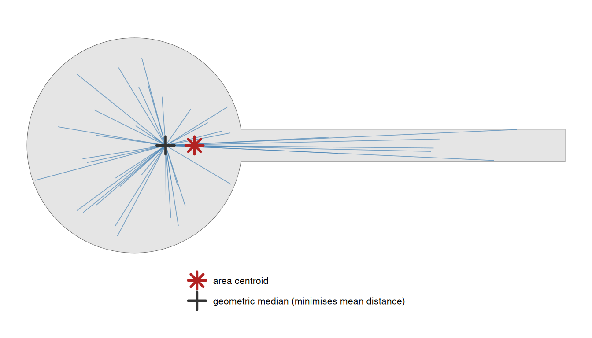
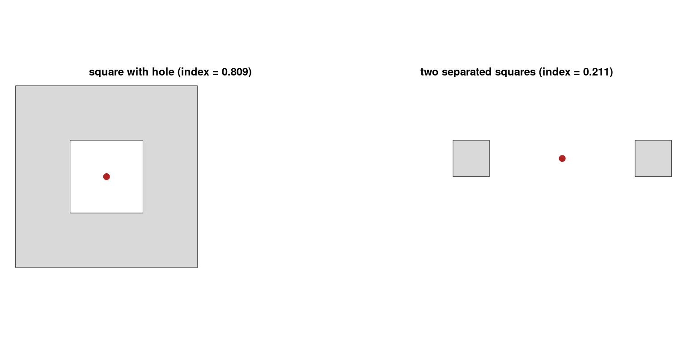
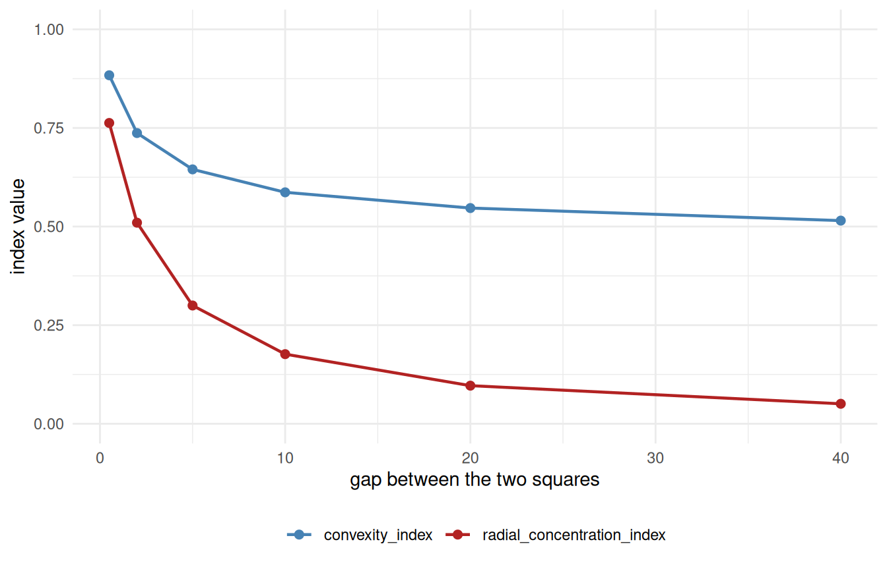

Code
library(shapeindices)
library(sf)
library(ggplot2)
theme_set(theme_minimal(base_size = 11))
theme_gallery <- theme_void(base_size = 10) +
theme(strip.text = element_text(size = 9, face = "bold"))2026-07-21
Source:vignettes/e-understanding-radial-concentration-index.qmd
library(shapeindices)
library(sf)
library(ggplot2)
theme_set(theme_minimal(base_size = 11))
theme_gallery <- theme_void(base_size = 10) +
theme(strip.text = element_text(size = 9, face = "bold"))
square <- st_polygon(list(rbind(c(0,0), c(10,0), c(10,10), c(0,10), c(0,0))))
make_rect <- function(w, h) st_polygon(list(rbind(c(0,0), c(w,0), c(w,h), c(0,h), c(0,0))))
aspect_seq <- c(1, 2, 4, 10, 20)
rectangles <- lapply(aspect_seq, function(a) make_rect(sqrt(100 * a), sqrt(100 / a)))
names(rectangles) <- sprintf("aspect %gx", aspect_seq)
make_star <- function(n_points, r_outer = 1, r_inner = 0.5, center = c(0, 0)) {
n <- n_points * 2
angles <- seq(pi/2, pi/2 + 2*pi, length.out = n + 1)[1:n]
radii <- rep(c(r_outer, r_inner), n_points)
x <- center[1] + radii * cos(angles); y <- center[2] + radii * sin(angles)
st_polygon(list(rbind(cbind(x, y), c(x[1], y[1]))))
}
ratio_seq <- c(0.9, 0.7, 0.5, 0.3, 0.15)
stars_r <- lapply(ratio_seq, function(r) make_star(6, 5, 5 * r))
names(stars_r) <- sprintf("notch ratio %.2f", ratio_seq)
disk <- st_buffer(st_sfc(st_point(c(0, 0))), dist = 5.64, nQuadSegs = 60)[[1]]
# a ring of n_arms radial wedges spanning [r_in, r_out], with a FIXED total
# angular width split evenly among them, so n_arms only changes how finely
# that fixed width is cut up - same construction used in
# vignette("c-understanding-moment-of-inertia-index") to demonstrate the
# same underlying effect there
make_spokes <- function(r_in, r_out, n_arms, total_angle_frac = 0.5) {
angles <- seq(0, 2 * pi, length.out = n_arms + 1)[1:n_arms]
half_w <- total_angle_frac * pi / n_arms
polys <- lapply(angles, function(a0) {
th <- seq(a0 - half_w, a0 + half_w, length.out = max(6, 40 %/% n_arms))
outer_pts <- cbind(r_out * cos(th), r_out * sin(th))
inner_pts <- cbind(r_in * cos(rev(th)), r_in * sin(rev(th)))
st_polygon(list(rbind(outer_pts, inner_pts, outer_pts[1, ])))
})
Reduce(function(p, q) st_union(st_sfc(p), st_sfc(q))[[1]], polys)
}
arm_counts <- c(2, 4, 8, 16)
spoke_shapes <- lapply(arm_counts, function(n) make_spokes(3, 5, n))
names(spoke_shapes) <- sprintf("%d arms", arm_counts)radial_concentration_index() measures how tightly a polygon’s own mass is concentrated around its own best possible centre, relative to how concentrated an equal-area circle’s mass is around its centre. For a mass distribution with density and total mass , and a candidate centre ,
As in span_index(), is a density over the polygon and is a whole point, not a scalar coordinate. But here the density appears once, not twice as in span’s double integral, because only one end of the distance is a random point: is drawn from , while is a single fixed candidate centre, not a second draw. That doesn’t mean acts only once - the minimiser is itself the -weighted geometric median, so reweighting the mass also moves the centre - it just enters through the rather than as a second integration variable.
radial_concentration_index() is , where is the same quantity for a circle (unweighted) or a concentric annulus (weighted) of the same area. It’s a sibling to moment_of_inertia_index() (squared distance to the centroid) and span_index() (plain distance, but between two random points, no reference point at all) - this one is plain distance to a reference point, the remaining combination of the two design choices.
No single prior paper matches this exact construction - median-anchored, plain-distance dispersal - the way moment_of_inertia_index() matches both Kaza’s IMI and Angel et al.’s Cohesion (vignette("c-understanding-moment-of-inertia-index")). It belongs generically to the “dispersion” family of circle-compactness properties surveyed in Angel, Parent & Civco (2010)1 - shapes whose mass sits close to a well-chosen centre read as compact, wherever exactly that centre is anchored - without being a direct implementation of any one property in that survey.
is convex in , so it has a unique minimiser - but it’s the geometric median (Fermat-Weber point), not the centroid. The centroid minimises squared distance (, which is why moment_of_inertia_index() uses it); plain distance is minimised by a different point entirely, with no closed form of its own. The two coincide only when the shape is symmetric enough (a disk, or anything centrally symmetric); on a lopsided shape they separate, with the median pulled toward the bulk of the mass and the centroid sitting at the plain average of position.
The figure below shows both on a “tadpole” - a round head with a thin tail, deliberately lopsided - together with the spokes whose lengths averages, drawn from the median (the point that makes that average as small as possible).

The tail drags the area centroid off toward it, while the geometric median stays back in the head where most of the mass actually is - the robustness that makes the median, not the centroid, the right centre for a mean-distance measure. The index is the mean spoke length from that median: the smallest such average any single centre can achieve. On a symmetric shape the two markers coincide and the distinction vanishes.
For a fixed centre , the disk of area centred at minimises among every measurable set of that area - a direct bathtub-principle argument ( is radially increasing about , so the minimising set of fixed measure is a ball around it). Evaluating this at ’s own geometric median shows the disk beats every shape of that area, holes and multiple parts included - the proof never assumes connectivity or convexity. The weighted case gives concentric rings, sorted densest-to-centre, by the same argument applied level-set by level-set.
Distance-to-a-fixed-point depends only on radius, not angle, so - unlike span_index() - neither reference needs elliptic integrals:
The geometric median has no closed form, so it’s found via Weiszfeld’s algorithm: starting from the centroid, repeatedly re-weight each point by the inverse of its current distance to the estimate and re-average, until the objective value (not the position) stops moving. Convergence on position isn’t guaranteed for a symmetric multi-part shape - two identical, separated blobs have a whole segment of equally-good centres, not one point - so the stopping rule has to watch the value, not the point.
sq1 <- st_polygon(list(rbind(c(0,0), c(2,0), c(2,2), c(0,2), c(0,0))))
sq2 <- st_polygon(list(rbind(c(10,0), c(12,0), c(12,2), c(10,2), c(10,0))))
dumbbell <- st_union(st_sfc(sq1, sq2))
res <- radial_concentration_index(dumbbell)
st_coordinates(res$center) # lands exactly on the connecting midpoint, (6, 1) X Y
[1,] 6 1Each triangle also needs finer internal resolution than a fixed 3-point quadrature rule gives - collapsing a large triangle to a handful of fixed points systematically misestimates , by single digits of percent at realistic mesh sizes, not a rounding-level nicety. radial_concentration_index()’s default (deterministic = TRUE) instead recursively subdivides each triangle - the same medial-subdivision idea span_index() uses for its own self-term, though built by its own vectorised routine that subdivides every triangle in the mesh in one pass rather than recursing triangle-by-triangle - into up to 256 sub-triangles and uses their centroids as the point cloud. The depth is area-adaptive, not fixed: the bias above is worst for large triangles specifically (it scales with a triangle’s own spatial extent), so only the mesh’s own largest triangle pays the full 256 points - smaller triangles need proportionally less subdivision to reach that same final sub-triangle resolution, down to a single centroid for the smallest ones. A real-world CDT mesh - many small triangles packed along complex boundary detail alongside a handful of large ones in the open interior - can have area ratios of many orders of magnitude between its largest and smallest triangle, so this typically cuts the total point count by 60x or more relative to giving every triangle the same fixed depth, while changing the index by under 0.05% - invisible at the precision indices are typically read to. deterministic = FALSE remains the escape valve for meshes too large even after that: it samples n_lines points directly from the weighted density and runs Weiszfeld on that sample instead, the same Monte Carlo idea convexity_index()/span_index() already use for the same reason.
deep_star <- stars_r[["notch ratio 0.15"]]
radial_concentration_index(deep_star)$index[1] 0.6660687
radial_concentration_index(deep_star, deterministic = FALSE, n_lines = 3000, seed = 1)$index[1] 0.6619143| shape | name | radial_concentration_index | D1 | D1_ref |
|---|---|---|---|---|
| square | 0.984 | 3.822 | 3.761 | |
| disk | 1.001 | 3.756 | 3.760 | |
| aspect 1x | 0.984 | 3.822 | 3.761 | |
| aspect 2x | 0.897 | 4.191 | 3.761 | |
| aspect 4x | 0.710 | 5.300 | 3.761 | |
| aspect 10x | 0.470 | 8.002 | 3.761 | |
| aspect 20x | 0.335 | 11.218 | 3.761 | |
| notch ratio 0.90 | 0.999 | 3.093 | 3.090 | |
| notch ratio 0.70 | 0.984 | 2.770 | 2.725 | |
| notch ratio 0.50 | 0.941 | 2.448 | 2.303 | |
| notch ratio 0.30 | 0.838 | 2.129 | 1.784 | |
| notch ratio 0.15 | 0.666 | 1.894 | 1.262 |
The disk scores just above 1 rather than exactly 1 - the expected residual from finite subdivision depth, not a modelling error. Elongation and deeper notches both pull the index down, same direction as moment_of_inertia_index() and span_index(), but not identically - it’s measuring a different thing (mean distance to a point, not squared distance to the centroid or pairwise distance with no reference point at all).

Both centres (red points) are found correctly even though neither sits on solid material - one lands in the middle of the hole, the other on the empty gap between the two squares. This is expected: the geometric median, like the ordinary centroid, doesn’t have to be a point of the shape itself, and the bathtub-principle proof never assumed it would be.
radial_concentration_index() shares moment_of_inertia_index()’s exact insensitivity to angular rearrangement, for the same underlying reason (see vignette("c-understanding-moment-of-inertia-index") for the full derivation): depends on each point only through its distance from the reference centre , never its bearing. For a shape with two-fold or higher rotational symmetry, - here the geometric median, not the centroid - sits at the shape’s own centre of symmetry regardless of how finely the mass is carved up angularly, so the index can’t tell a couple of broad wedges from many thin ones covering the same total angle.
spoke_results <- lapply(spoke_shapes, function(g) radial_concentration_index(st_sfc(g)))
tbl_spokes <- do.call(rbind, Map(function(nm, res) {
data.frame(shape = shape_thumb(spoke_shapes[[nm]]), name = nm,
radial_concentration = res$index,
convexity = suppressWarnings(convexity_index(st_sfc(spoke_shapes[[nm]]), deterministic = FALSE,
n_lines = 5000, seed = 1)$index))
}, names(spoke_shapes), spoke_results))
knitr::kable(format = "html", tbl_spokes, digits = 4, row.names = FALSE, escape = FALSE)| shape | name | radial_concentration | convexity |
|---|---|---|---|
| 2 arms | 0.4618 | 0.6269 | |
| 4 arms | 0.4618 | 0.5168 | |
| 8 arms | 0.4618 | 0.4278 | |
| 16 arms | 0.4618 | 0.3797 |
# how far each row's own median landed from the origin - checking that the
# rotational symmetry really is pinning it there, not just approximately
center_drift <- vapply(spoke_results, function(res) {
as.numeric(sqrt(sum(st_coordinates(res$center)[1, 1:2]^2)))
}, numeric(1))radial_concentration doesn’t move as the same fixed angular width is cut from 2 arms into 16 - only convexity_index() responds to the widening gaps. Worth checking independently here, since the reference centre is a median rather than a centroid: the largest distance from the origin to any row’s own center above is 3.12e-06, confirming the median stays pinned by the same rotational symmetry the centroid relies on in moment_of_inertia_index()’s own version of this effect.
| weighting | name | index |
|---|---|---|
| uniform | 0.902 | |
| concentrated at centre | 0.870 | |
| concentrated at edge | 0.724 |
Concentrating weight at the edge scores lowest, as expected. But concentrating it at the centre scores lower than the uniform baseline, not higher - surprising at first sight, until you remember that the reference itself adapts to the given weight’s own histogram rather than staying fixed. Both D1 (actual) and D1_ref shrink when weight moves toward the centre, but here D1_ref shrinks proportionally faster: pushing weight toward the middle via a smooth radial function creates a skewed histogram whose own ideal sorted-ring arrangement is a much tighter target than a uniform disk’s, and the star’s actual notches keep the real arrangement from fully reaching that tighter target. The one comparison guaranteed to hold either way - centre-weighted beats edge-weighted - does; the comparison to the unweighted baseline doesn’t have a similarly simple guarantee.
radial_concentration_index() is the plain-distance-to-a-reference-point member of a family of three. Its siblings measure the same “how spread out is the mass” question through different lenses: moment_of_inertia_index() uses squared distance to the centroid (vignette("c-understanding-moment-of-inertia-index")), and span_index() uses plain distance between two random points, with no fixed reference point at all (vignette("d-understanding-span-index")). Unlike either sibling, its reference centre is a geometric median rather than a centroid - the point that makes plain (not squared) distance minimal - which is also why it, alone among the three, needs an iterative algorithm (Weiszfeld’s) just to locate its own centre.
“Things to watch out for” above already showed one divergence from convexity_index(): widening the angular gaps between spokes at a fixed radius moves convexity_index() but leaves radial_concentration_index() untouched. Pulling two solid pieces apart in space - rather than carving a fixed footprint more finely - shows the opposite pattern, and a genuinely surprising one: radial_concentration_index() turns out to be the more sensitive of the two, not the less.

Both indices fall as the two squares separate, but only one of them keeps falling. convexity_index() levels off near 0.52 no matter how far apart the pieces get - it’s a bounded probability (the fraction of random point-pairs whose connecting line stays inside), and once the two lobes are far enough apart that essentially every cross-lobe pair is already cut, further separation can’t push the fraction down any more. radial_concentration_index() has no such floor: it’s an absolute mean-distance ratio, and mean distance from the (unboundedly distant) median to either lobe grows without limit as the gap widens, so the index keeps falling toward 0. The lesson generalises beyond this one shape: convexity_index() asks a yes/no question per pair of points and averages the answers, which saturates once the answer stops changing; the “distance from a centre” family (radial_concentration_index(), moment_of_inertia_index(), span_index()) has no equivalent ceiling on how badly a shape can score.
radial_concentration_index() compares (mean plain distance from every point to the shape’s own geometric median) to the same quantity for an equal-area disk, or - weighted - a concentric annulus, both provably optimal via the bathtub principle. 1 exactly when the shape matches its reference.moment_of_inertia_index() has, and for the same reason (see “Things to watch out for” above). convexity_index() is the one that actually sees the gaps between the wedges.deterministic = TRUE (the default) uses area-adaptive triangle subdivision rather than a fixed quadrature rule, since a small, fixed point count systematically misestimates on real meshes; deterministic = FALSE remains available as a Monte Carlo escape valve on meshes too large even for that.